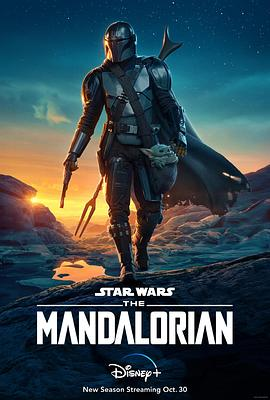

曼达洛人 第二季 / The Mandalorian Season 2
影视 · 看过 · 2021-02-02 · 5 星
又名：星球大战：曼达洛人 / Star Wars: The Mandalorian

2020-10-30(美国) / 佩德罗·帕斯卡 / 卡尔·韦瑟斯 / 吉娜·卡拉诺 / 吉安卡罗·埃斯波西托 / 蒂莫西·奥利芬特 / 特穆拉·莫里森 / 温明娜 / 罗莎里奥·道森 / 凯缇·萨克霍夫 / 西蒙·卡斯安德斯 / 美国 / 乔恩·费儒 / 布莱丝·达拉斯·霍华德 / 戴夫·菲洛尼 / 瑞克·法穆易瓦 / 卡尔·韦瑟斯 / 佩顿·里德 / 罗伯特·罗德里格兹 / 塔伊加·维迪提 / 曼达洛人 / 30分钟 / 曼达洛人 / 动作 / 科幻 / 冒险 / 乔恩·费儒 Jon Favreau / 戴夫·菲洛尼 Dave Filoni / 克里斯托弗·约斯特 Christopher Yost / 瑞克·法穆易瓦 Rick Famuyiwa / 英语
感觉比第一季还精彩啊
说过什么
2021-02-02 13:08:46
看过 · 时间来自广播，短评来自标记页
感觉比第一季还精彩啊
2021-02-01 19:57:36
广播 · 在看
2021-01-31 06:48:21
广播 · 想看
感觉太费时间了，先不开坑了
标签：2020 · 迪士尼 · 美国 · 科幻
最后一次看到是 2026-08-01T11:05:25+10:00 · 豆瓣原页